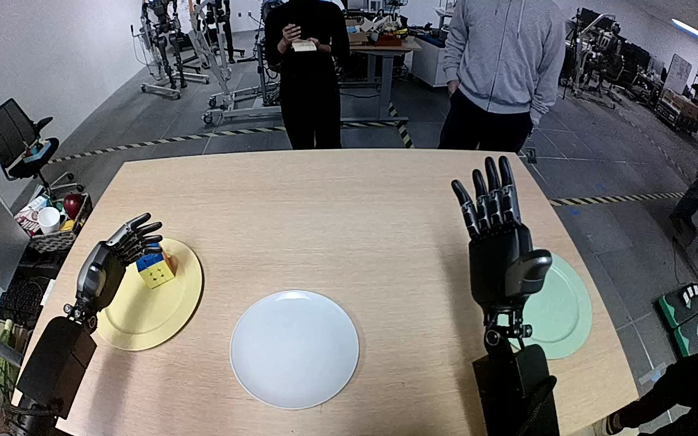

NVIDIA GR1 · 95
Video 95

Visual review action_review.json
{
"prompt_protocol": "humanoid_action_v1",
"prompt_provenance": "visually_authored_from_video_and_initial_frame",
"reviewed_contact_sheets": [
"sheet_001.jpg"
],
"inspected_frame_stride": 2,
"inspected_sampled_frame_count": 60,
"initial_scene": "Forward-looking robot view over both forearms. A multicolored Rubik's cube rests on the yellow plate to the robot's left; an empty gray plate is near the middle and a green plate is beside the raised right hand. The open left hand is near the cube.",
"observed_sequence": [
{
"start_frame": 0,
"end_frame": 33,
"action": "The open left hand settles around the cube on the yellow plate, gradually positioning thumb and fingers on opposing sides. The right hand remains raised and open without contacting an object.",
"confidence": "high"
},
{
"start_frame": 34,
"end_frame": 61,
"action": "The left thumb and fingers close around opposite sides of the cube while it is still at the yellow plate, establishing a grasp.",
"confidence": "high"
},
{
"start_frame": 62,
"end_frame": 73,
"action": "The left hand lifts the securely held cube clear of the yellow plate.",
"confidence": "high"
},
{
"start_frame": 74,
"end_frame": 95,
"action": "The left arm carries the cube inward and forward over the gray plate while maintaining the grasp.",
"confidence": "high"
},
{
"start_frame": 96,
"end_frame": 113,
"action": "The left hand lowers the held cube into the gray plate and holds it close to the plate surface.",
"confidence": "high"
},
{
"start_frame": 114,
"end_frame": 119,
"action": "The left fingers open and release the cube. It settles with the orange face upward on the gray plate while the open hand stays beside it.",
"confidence": "high"
}
],
"arm_hand_roles": {
"left": "Active manipulator: thumb and fingers grasp the cube, lift and carry it from the yellow plate to the gray plate, lower it, and open to release it.",
"right": "Raised open hand with slight pose drift; no cube or plate contact and no support, transfer, or coordinated manipulation."
},
"anatomical_side_evidence": {
"convention": "The camera looks forward over the robot's own paired forearms, both entering from the near bottom edge. The manipulating forearm originates on the robot's left side of this forward egocentric view; the raised counterpart originates on the right. The active hand's opposed thumb and fingers grasp the cube on that side. This body-relative forearm arrangement supports the original left-hand annotation.",
"confidence": "medium-high",
"limitation": "The shoulders and torso are outside the camera view; anatomical naming is inferred from the paired forward-reaching forearms in the robot-view camera rather than directly visible shoulder attachments."
},
"terminal_state": "The cube rests inside the gray plate with its orange face upward. The left thumb and fingers are open and no longer gripping the cube, with the hand still beside the plate; the yellow plate is empty. The right hand remains raised and uninvolved.",
"uncertainties": [
"The shoulders and torso are not visible; left/right assignment uses the forward robot-view forearm arrangement and is consistent with the source annotation. Exact finger-to-cube contact surfaces and the precise instant of plate contact are partially occluded by the hand."
],
"annotation_discrepancies": [],
"evidence_frame_indices": [
0,
34,
54,
72,
92,
110,
116,
119
],
"selected_execution_status": "success",
"video_id": "95",
"dataset": "NVIDIA_GR1_100",
"dedicated_review_agent": "review_gr1_95",
"review_source_video": "NVIDIA_GR1_100/95/original/original.mp4",
"source_frame_count": 120,
"source_fps": 20.0,
"native_detail_frames": [
34,
54,
72,
92,
110,
116,
119
],
"world_model_prompt": "The robot uses its left hand to grasp the Rubik's cube between its thumb and fingers on the yellow plate, then lifts it clear. It carries the cube to the gray plate, lowers it, and opens its fingers to leave the cube resting on the plate. Keep the camera fixed; preserve robot geometry, physically valid joint motion, and normal gripper opening and closing.",
"original_task_instruction": "Use the left hand to pick up rubiks cube from yellow plate to grey plate.",
"selected_segment": {
"start_frame": 0,
"end_frame_exclusive": 120,
"reason": "Complete original single-task reference; no cropping or trimming requested."
},
"source_video_sha256": "b32eb1d0bbcf259a369fafbe9f14ba2720e7c4c51ddc8959fa6fcd1dab5049a6",
"review_completed_at": "2026-10-13T18:41:16.751789+00:00"
}